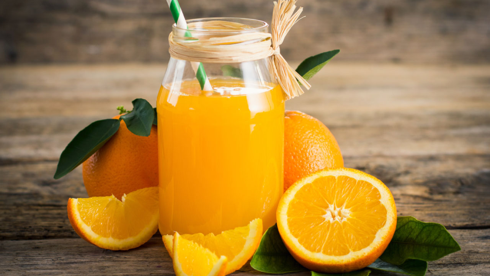

Apple-Juice
Apple juice is a refreshing and thirst-quenching beverage that captures the natural sweetness and crispness of ripe apples. Apple juice brings you the essence of this classic and beloved drink, providing a pure and fruity taste experience. To create apple juice, fresh apples are carefully selected and pressed to extract their natural juice. The juice is then filtered to remove any pulp or solids, resulting in a smooth and clear liquid that showcases the pure essence of apples.
Black-Grape-Juice
Black grape juice is a delicious and flavorful beverage that captures the rich and sweet essence of black grapes. Black-Grape-Juice brings you the essence of this luscious and refreshing drink, providing a delightful and fruity taste experience. To create black grape juice, ripe black grapes are carefully selected and juiced to extract their natural flavors.
Cranberry-Juice
Cranberry juice is a tart and tangy beverage that offers a refreshing and unique taste experience. Cranberry-Juice brings you the essence of this vibrant and flavorful drink, providing a delightful burst of cranberry goodness. Cranberry juice is made from the juice of cranberries, a small, red fruit known for its distinct tartness.Guava-Juice
Guava juice is a delightful and tropical beverage that captures the sweet and tangy essence of guava fruit. Guava-Juice brings you the essence of this exotic and refreshing drink, providing a burst of tropical flavor in every sip. To create guava juice, ripe guava fruits are typically harvested and juiced to extract their flavorful juice.
Orange-Juice
Orange juice is a classic and refreshing beverage that captures the bright and citrusy essence of oranges. Orange-Juice brings you the essence of this beloved and invigorating drink, providing a burst of sunshine in every sip. To create orange juice, ripe oranges are typically handpicked and juiced to extract their flavorful juice.Sugarcane-Juice
Sugarcane juice is a natural and energizing beverage that is extracted from the sugarcane plant. Sugarcane-Juice brings you the essence of this refreshing and invigorating drink, providing a burst of natural sweetness and hydration. To create sugarcane juice, mature sugarcane stalks are typically harvested and pressed to extract their sweet juice.